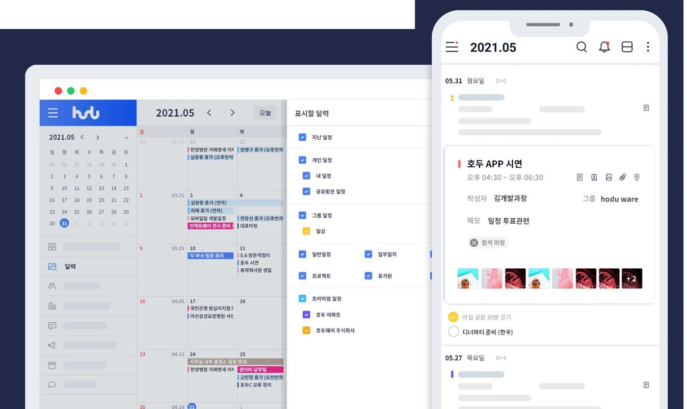

WEB DESIGN · PUBLISHING
호두 홈페이지 리뉴얼
핵심 기능을 빠르게 이해하도록 화면과 소개 문구를 정리했습니다.
메인 비주얼 제외 디자인·문구·이미지 제작 / 웹 퍼블리싱
SELECTED WORK

WEB DESIGN · PUBLISHING
핵심 기능을 빠르게 이해하도록 화면과 소개 문구를 정리했습니다.
메인 비주얼 제외 디자인·문구·이미지 제작 / 웹 퍼블리싱

UI DESIGN · WEB PUBLISHING
웹·모바일의 채팅 경험을 PC 환경으로 확장했습니다.
PC 메신저 UI 디자인 / 웹 화면 퍼블리싱
PUBLISHING CAPABILITIES
01 / LAYOUT
화면 크기에 맞는 구조와 콘텐츠 우선순위를 설계합니다.
02 / INTERACTION
jQuery로 동작을 구현하고 입력·활성·비활성 상태를 정리합니다.
03 / STRUCTURE
HTML·CSS의 구조를 정리하고 반복 UI를 일관된 규칙으로 제작합니다.
ABOUT ME
편집·광고디자인을 바탕으로 웹·앱 UI 디자인과 웹 퍼블리싱으로 작업 범위를 넓혀왔습니다. 화면을 설계하고 디자인하며, 실제로 사용할 수 있는 웹으로 완성합니다.
2021.01–2025.11 · 4년 11개월
웹·앱 UI 디자인과 웹 퍼블리싱을 담당했습니다. 기획자가 없는 상황에서는 필요한 화면 구성과 문구도 함께 정리했습니다.
2014.12–2020.01
광고디자인
2014.03–2014.09
전단·현수막·리플릿 디자인
2010.08–2012.02
편집디자인·대리점 관리·인쇄 프로그램 교육
2010.04–2010.07
실사·편집디자인
2008.08–2009.10
편집디자인·수정 및 접수·대리점 관리
AI WORKFLOW
01 / AI SUPPORT
AI로 자료 조사, 요구사항 정리, 아이디어 확장과 문구 초안을 검토합니다.
02 / MY DECISION
사용자 맥락과 구현 조건을 기준으로 제안을 선택하고 직접 수정합니다.
03 / MY DELIVERY
Figma·Photoshop으로 디자인하고 HTML·CSS·jQuery로 구현·검증합니다.